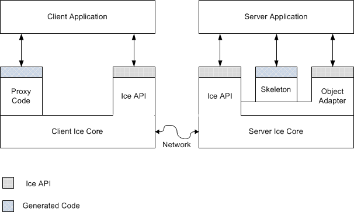

zeroc ice 指的是 zeroc 公司开发的一款网络通讯引擎 ice。ice 是一个面向对象的 RPC 框架，可以搭建分布式应用。最主要的一点，它是跨语言的，不管你使用 Python、Java 还是 C++、Ruby、C# 等开发语言，它都支持。还有一点，ice 提供了其他功能，包括：IceStorm（一种订阅服务，类似于消息队列）、IceGrid 等。
下面从安装、使用等几个方面介绍下 ice 在 python 中的使用。
安装
安装环境是 python3.6.9，ubuntu18.04。
安装方式一
安装步骤如下：
1 | 1. sudo apt-get install openssl libssl-dev libbz2-dev |
安装方式二
或者，可以按照 zeroc 官方文档进行安装，官方文档如下：
1 | https://zeroc.com/downloads/ice/3.7/python |
基础介绍
首先简单介绍下 ice 中相关概念和一些基础知识。
slice语言
Slice (Specification Language for Ice) 是实现 Ice 协议的开发语言，它可以把 Ice 接口的实现翻译成不同的开发语言版本。对于不同的应用开发语言，有不同的映射规则。
Slice 提供一个基本的抽象机制用于分离接口和他们的实现。Slice 用于描述接口，建立客户端和服务端之间的关系。Slice的接口描述与具体实现语言无关，即它可以让你定义 client 和 server 之间的交互而不用关心具体的开发语言，例如 C++，Java、Python等。通过编译，可以把 Slice对接口的描述转换成不同的开发语言。
client 与 server
在 ice 中，client 和 server 不是指一个应用系统的特定部分，它们是在一个持续请求中扮演不同角色，具有不同的功能。
client 会主动向 server 发送服务请求，而 server 端只能被动的接收请求，并针对请求，为 client 端提供不同的服务。通常，client 会主动向 server 端发起请求，也可以接收 server 端的回调通知，这样看来，client 既有 client 端属性也有 server 端属性。
client 和 server 的结构如下：

上面的结构中，有以下几部分。
Ice Core
ice core 包含了 client 和 server 的运行时，用于支持远程通信。这部分包含了网络通信、线程、字节序及其他网络相关的代码实现，并与应用层代码分离开来。ice core 提供了一系列库供 client 和 server 端调用。
Ice API
ice 中通过 ice api 来访问 ice core，使用 ice api 来做一些基础工作，例如初始化和资源回收。ice api 对于 client 和 server 端来说没有什么区别。
Proxy Code
proxy code 部分是根据 slice 文件中定义的内容生成的，它规定了对象和数据的类型。proxy code 主要有两个功能：
- 为 client 端提供向下调用的接口，在 proxy API 调用函数最终会向 server 端发送一个 RPC 消息，然后在服务端执行响应的目标函数
- 提供组包和解包代码，组包是序列化复杂数据结构的过程，例如为了在网络上传送，序列化一个序列或者字典。组包会将数据转换成一种标准的数据传输格式，并且不受字节序的影响。解包就是相反的过程。
Skeleton Code
skeleton code 与 proxy code 功能相似，只是它在 server 端发挥作用，proxy code 是在 client 端的。它提供了向上调用的接口，并且允许 ice 运行时将控制线程转换为应用代码。skeleton 中也包含组包和解包的功能，以便 server 端能接收 client 端传入的参数，并且向 client 端返回结果或者异常。
Object Adapter
object adapter 是 ice api 的一部分，它只在 server 端使用，它由如下几个功能：
- 将客户端请求与编程语言中的特定方法映射，即 object adapter 会找到内存中具有特定标识的对象
- object adapter 与传输协议有关，如果一个 object adapter 对应多个传输协议，server 就能提供多种服务
- object adapter 可以生成 proxy（proxy 会被发送到 client 端）。object adapter 中记录了每个对象的类型、名称、传输信息。当 server 端想要创建 proxy 时，object adapter 能创建 proxy 而不需要知道具体细节。
Ice Objects
简单来说，ice object 对象中定义了一些接口，通过调用这些接口，client 能向服务器发送请求。我的理解是（以 Python 为例），ice object 中定义了一些方法，这些方法实现了请求创建、数据传递、数据接收等功能；我们在 slice 文件中定义的接口，经过转换后是 ice object 的子类；server 端需要继承 ice object 的子类来实现具体的功能。
Proxies
通过 proxy，client 能与 ice object 关联起来，proxy 就类似于 ice object 的一个使者。当 client 想调用 ice object 中的某个功能时（其实就是某个方法），需要通过 proxy ，这时会执行以下流程：
1 | 1. 定位 ice object |
proxy 信息可以用一个字符串表示：
1 | SimplePrinter:default -p 10000 |
这种字符串形式的 proxy 更加易于理解和存储。
proxy 还分为 Direct Proxy 和 Indirect Proxy。Direct Proxy 通常包括 proxy 对象名称和服务器地址，包括以下两类：
1 | 1. a protocol identifier (such TCP/IP or UDP) |
Indirect Proxy 有两种形式，一种是仅仅提供对象名称（如：SimplePrinter），另一种是提供对象名称和对象适配器名称（如：SimplePrinter@PrinterAdapter）。
Ice Protocol
ice能提供 RPC 协议，这些 RPC 协议可以使用多种底层协议，最常用的是TCP和UDP，但是ice也支持 Websocket, Bluetooth 和 Apple’s iAP。Ice还可以使用 SSL 协议对传输数据加密。
Ice 协议中定义了以下内容：
1 | 1. 定义了一些消息类型，例如请求\应答的消息类型 |
Ice也支持数据压缩，当客户端与服务端传输的数据量非常大时，这很有用。
Ice 协议非常适合创建高效的事件分发机制，因为它允许我们分发消息而不用关心消息内部的实现。
Ice 协议也支持双向的操作，即：如果服务端传输数据到客户端提供的回调对象上，回调过程可以通过客户端最初创建的连接来完成。
Ice Service
对于开发分布式应用程序，Ice Core提供了一个复杂的 client-server 平台，然而，实际开发中不仅仅需要远程处理能力，也需要按需提供服务、向客户端分发代理、分发异步任务、向应用程序分发补丁等等。Ice 提供了以下服务来实现上面的功能：
1 | 1. IceGrid |
总结
从上面的介绍中，我们可以发现，开发 ice 的 client 和 server 时，我们需要以下几个部分：
1 | 1. slice 文件 |
上面这些都会在下面的代码中体现出来，可以回想一下它们的功能分别是什么。
简单使用
安装完成后，首先看第一个使用的例子。
编写 Slice File
开发时，首先要编写 slice 文件，slice 文件是与开发语言无关的。编写完成后，需要使用编译器将其转换成不同的开发语言，例如转换成 Python 时，就需要使用 slice2py。slice 文件里面的内容其实就是一些接口，server 端开发时需要编写 Python 类来实现这些接口。
Printer.ice：
1 | module Demo |
其中， Demo 是模块名称，Printer 是接口名称，接口里面是方法的定义。
编写完成后，执行：
1 | slice2py Printer.ice |
执行完成后，会生成 Printer_ice.py 文件和 Demo 文件夹。Demo文件夹下的内容如下：
1 | ├── __init__.py |
Printer_ice.py 文件中的内容如下：
1 | # -*- coding: utf-8 -*- |
从上面的内容中可以看出，Printer_ice.py 中主要有两个 Python 类 PrinterPrx 和 Printer。
编写 Server 端
1 | import sys, Ice |
server 端的代码中主要有两部分：一个 Python 类 PrinterI，继承了 Demo.Printer 并实现了其中的方法；with 代码块。
with 代码块中的含义如下：
1 | 1. Ice.initialize()初始化 Ice 运行环境，返回一个Ice.Communicator对象，它是 Ice 运行时的主要对象 |
编写 Client 端
1 | import sys, Ice |
client 中只有一个 with 代码块，其含义如下：
1 | 1. Ice.initialize()：初始化 Ice 运行环境 |
编写完成后，执行 Python 文件就行了：
1 | python server.py |